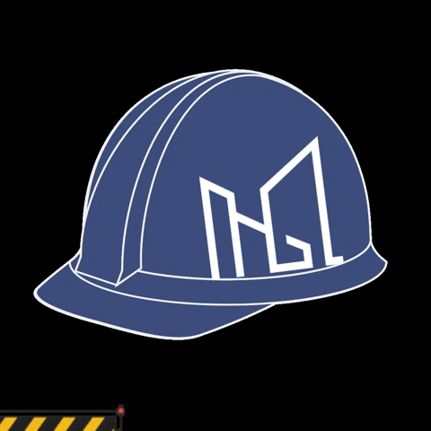

Welcome to the home page
HI :), I'm very happy to present you my wiki about the game I'm currently working on.
It's called Knightmare "a Voice in the Dark" and it's my first game project ever.
It started as a project in school for something called "Travail the Maturité" (in English it would
be "Graduation Project") and since I couldn't finish it completely at the time I made only the "working"
part of the game. That being all that can be done by the player while playing.
Please note that every character, ennemy and NPCs presented in this Wiki are only ideas I wanted to
add in the game. They're not really doing anything for now...
If you are interested about seeing what every beings I imagined was supposed to look like please click here and for the areas here
This Wiki and the Game it is related to are still under development
